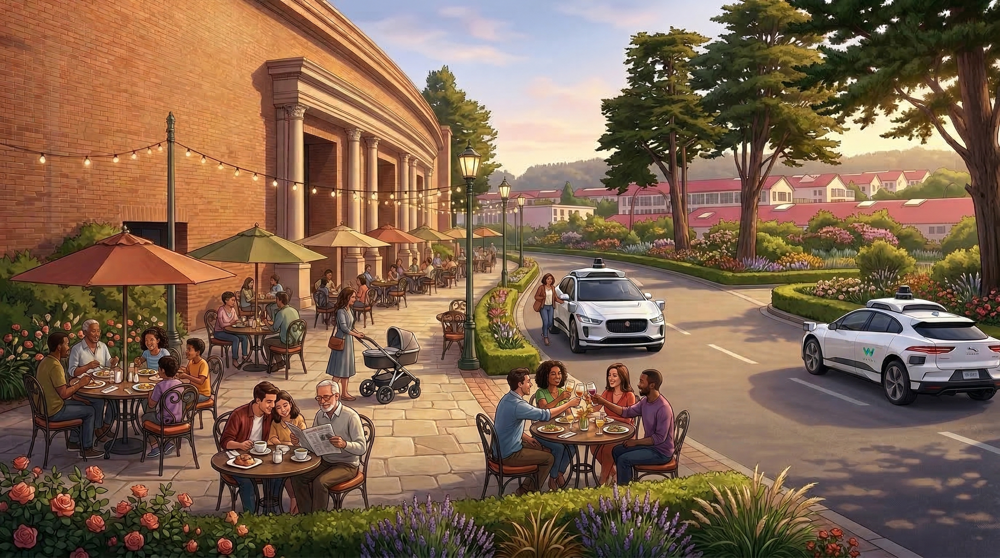
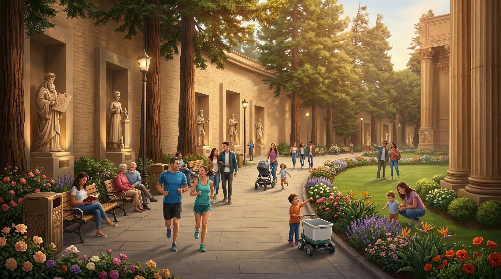
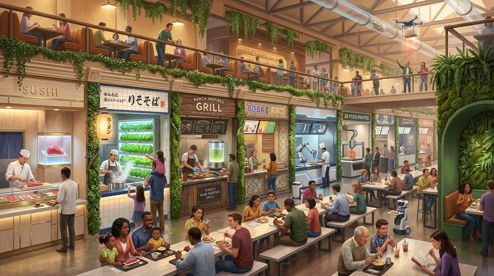
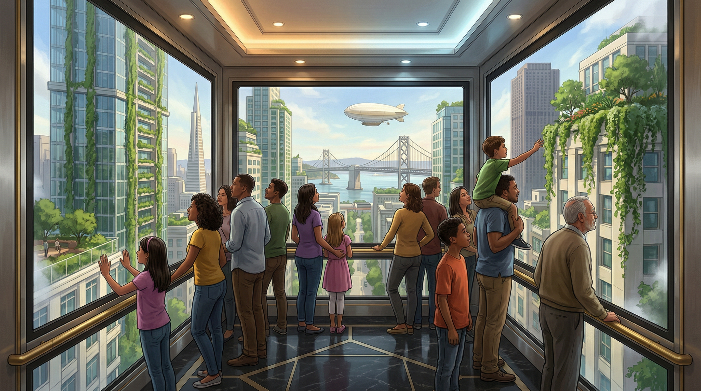
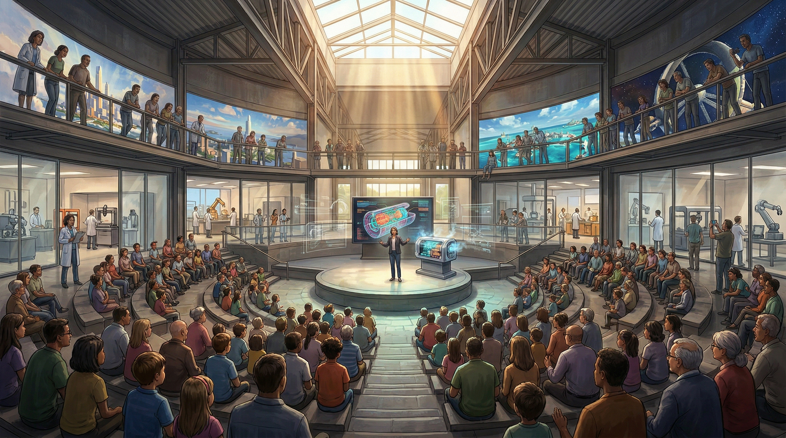
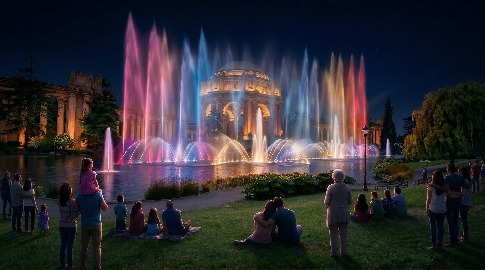

A new civic destination for San Francisco at the Palace of Fine Arts
A place you can visit with your kids, family, and friends to experience beauty, wonder, and hope for the future.
Here in the Bay Area, the most extraordinary innovations on earth are being built.
Cures for blindness, delivering livesaving medical equipment, and restoring our coral reefs.
For most people, there’s no place to see this.
Without access to the future, people aren’t inspired to build it.
If we want an incredible future, we need a home for that optimism.
What if San Francisco had a place where the future felt exciting again?
In 1915, San Francisco opened its doors to the world, inviting millions to witness a city rebuilt from rubble.
This World’s Fair captured our spirit of possibility and put San Francisco on the world stage.
The last building standing from that World’s Fair is the Palace of Fine Arts.
It needs a new purpose — a steward for the next 100 years.
We imagine a home for San Francisco’s spirit of innovation.

Welcome to the Future
Our vision for San Francisco’s new home of progress.
Palace of Fine Arts · 2030

Step out of your Waymo onto Palace drive.

Wander through beautifully landscaped grounds filled with statues of history’s greatest innovators.

Meet friends at the World’s Fare, grabbing a bite to eat in one of the 60+ food stalls serving global and innovative dishes.

Bring your kids on a Tour into Tomorrow, stepping into a story about the incredible future that’s ahead.

Join for a talk and workshop to learn about the incredible work being done today to build the future, and find a way to get involved.

End your evening with a beautiful fountain show before heading home with a renewed sense of wonder.
The Palace of Fine Arts will once again capture our spirit of innovation, serving as a testament to human potential.
Help write the next chapter in the story of San Francisco.
This is a once-in-a-generation opportunity to build a new institution for San Francisco.
I’m assembling a coalition of funders, founders, and civic leaders who share my belief in the future to make it happen.
If that’s you, I’d love to meet you.

Get in Touch Visit Preview Center